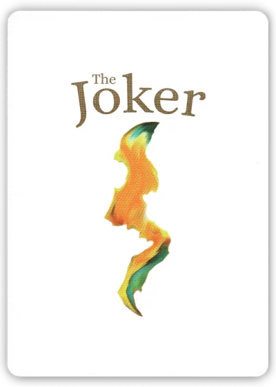
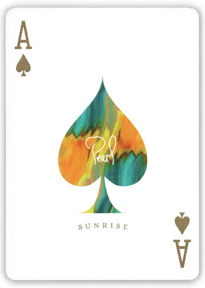

Pearl Sunrise Playing Cards
Pearl Sunrise Playing Cards, If you've ever enjoyed the play of light and clouds that makes a beautiful sunrise or sunset, then you'll love the duality and impressionistic beauty of Pearl Playing Cards: Sunrise and Sunset. For over a year, these decks have been tested to arrive at the perfect tuck box, colors, and finish. The result is a tuck case made from imported paper. For Sunrise , it is adorned with gold foil gold and bright red metallic inks; for Sunset bronze foil and bronze and dark red metallic inks.The finishes are slightly different, too. The Sunrise has a Magic Finish for more slippery and shining cards, and Sunset with has a Royal Finish, which is less slippery.This printing is limited to 5,000 decks, so buy yours today before they are gone!
Cards: 55Stock: ClassicFinish: MagicDesigned by ??
Pearl Sunrise Playing Cards, If you've ever enjoyed the play of light and clouds that makes a beautiful sunrise or sunset, then you'll love the duality and impressionistic beauty of Pearl Playing Cards: Sunrise and Sunset. For over a year, these decks have been tested to arrive at the perfect tuck box, colors, and finish. The result is a tuck case made from imported paper. For Sunrise , it is adorned with gold foil gold and bright red metallic inks; for Sunset bronze foil and bronze and dark red metallic inks.The finishes are slightly different, too. The Sunrise has a Magic Finish for more slippery and shining cards, and Sunset with has a Royal Finish, which is less slippery.This printing is limited to 5,000 decks, so buy yours today before they are gone!



Cards: 55Stock: ClassicFinish: MagicDesigned by ??